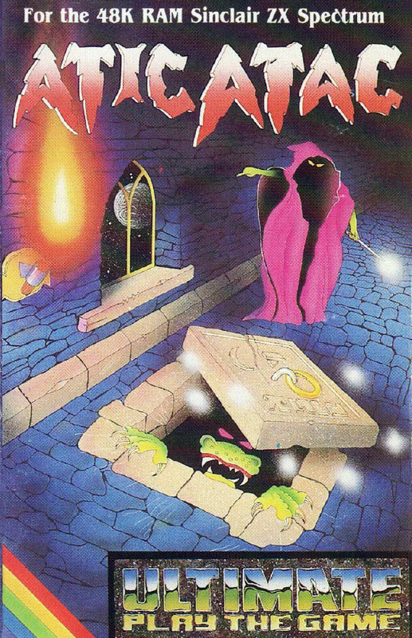
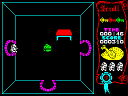

Atic Atac


{kind=link}

| Publisher: | Ultimate |
| Price: | £5.50 |
| Year: | 1983 |
| Source: | CRASH, Issue 2 |
In last month’s issue we promised a fuller review of Atic Atac as our review copies arrived too late to do it full justice. It turns out to be difficult to do full justice to this program anyway! There’s such a lot of it. You’re stuck in this castle which contains five floors with lots of rooms on each floor. The total number of rooms, staircases and passageways is a subject of argument, although the best estimate we’ve heard about from one reviewer (who’s been busy mapping the place) is 40 rooms per floor, making a total of 200.

The rooms are seen in a sort of splayed perspective from above so that all four walls as well as the floor are visible. Put simply, the object of the game is to find the key, which comes in three pieces, open the main door and escape. You can do this as three different characters — knight, wizard or serf each having different weapons and knowing different secret passages.
Very like Lunar Jetman, Ultimate have provided little or no instruction as to how the game is played to your best advantage — the entire thing is a learning experience, like life!
CRITICISM
‘There’s really nothing much to be said about Ultimate’s graphics that hasn’t already been said. Just marvellous. But the details of events is also fantastic, like when you lose a life, a cross marks the spot, but it stays there until the end of the game. From this you learn that if you pick up an object, and then put it down somewhere you’ll be able to recognise which was the room from rediscovering that object. This becomes the best way to map out the rooms. If you aren’t nuts already, Atic Atac is likely to be the turning point.’
‘Atic Atac is in no way a true adventure but neither is it a shoot the baddies game. But it is one thing — FANTASTIC! There are many types of baddies, ghosts, spiders, ghouls, pumpkins and guest appearances from Frankenstein’s monster, Dracula, Devil Witch and Mummy. You certainly get your money’s worth from content alone! It’s fast moving, fun to play and its originality, graphics and addictiveness make it excellent value for money. This is one of the best arcade games I have seen in a long time.’
‘A drawback with complex games is that the control keys can get difficult to manage. Atic Atac uses Ultimate’s favourite layout, but the keys are a handful and it’s not possible to get full value from the game’s potential if you use a joystick. Definitely a game for those with nimble fingers! Otherwise — just excellent. Ultimate have done it again.’
COMMENTS
| Control keys: | Q = left, W = right, E = down, R = up, T = fire, Z or SYMBOL SHIFT- pick up and drop |
| Joystick: | Kempston, AGF, Protek |
| Keyboard play: | Highly responsive, 8-directional but needs practice! |
| Colour: | Very good |
| Graphics: | Excellent with masses of detail |
| Sound: | Good |
| Skill levels: | Just generally impossible! |
| Lives: | 3 |
| General rating: | Excellent |
| Use of computer: | 90% |
| Graphics: | 95% |
| Playability: | 95% |
| Getting started: | 85% |
| Addictive qualities: | 93% |
| Value for money: | 95% |
| Overall: | 92% |